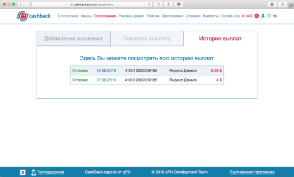

Несмотря на то, что в китайском интернет-магазине Aliexpress товары стоят иногда в десятки раз дешевле, чем в обычном магазине, есть способы сэкономить ещё немного денег.
Купоны продавцов — выгода в деньгах?
Самый простой, но самый бесполезный для обычного покупателя — купоны продавца. Практически у каждого из них можно получить купон на скидку, правда чтобы использовать купон к примеру, в $5 нужно купить у продавца товаров на $90, что нам не очень подходит.
Cashback-карты — экономия до 5%
Второй по популярности способ — использование для расчёта кобрендинговых карт банков. Такая карта, например, есть у Тиньков-банка. Условия по дебетовой следующие. Вам возвращается 2% от всех покупок на Aliexpress и 1% от всех остальных покупок. Возвращается, правда, не деньгами, а баллами, которые вы можете потратить на покупки в Алиэкспресс. По кредитной карте cashback больше — 5%. Но обслуживание кредитной карты стоит 990 рублей.
Cashback-сервисы — экономия до 18%
Самый выгодный способ делать покупки на Aliexpress, которым пользуюсь и я. Таких сервисов существует несколько. Все они базируются на официальной партнёрской программе Aliexpress. То есть магазин платит вознаграждение за привлечённых покупателей сервису, а тот делится вознаграждением с вами.
Я пользуюсь cashback-сервисом от EPN, который возвращает 7% стоимости моих покупок. Чтобы вернуть 7%, вам нужно зарегистрироваться по этой ссылке, затем скачать и установить себе плагин для браузера. После того как плагин установлен, вам нужно перед покупкой на странице товара нажать на иконку плагина, и перейти по ссылке.
Все покупки, совершённые с помощью плагина, сразу становятся видны в статистике сервиса. Начисленный cashback тоже виден в отдельной колонке.
После того, как вы подтвердите получение покупки в Aliexpress, вы можете подать заявку на выплату вознаграждения. Деньги можно получить на ваш Яндекс.Кошелёк, Webmoney, Qiwi.Кошелёк или же на счёт мобильного оператора. Я получаю кэшбек на Яндекс.Кошелёк, выплата приходит в течение нескольких минут.
 $4 (250 рублей)
Но, как говорят в рекламе, и это ещё не всё. В начале 2017 года Aliexpress ввёл возможность оплаты покупок подарочными сертификатами. Идея в том, что вы сначала покупаете сертификаты, а потом оплачиваете покупки уже ими, выбирая способ оплаты. Нам сертификаты интересны тем, что это такой же товар, за который тоже можно получить кэшбек. Таким образом, вы регистрируетесь в сервисе, покупаете сертификат, получаете обратно 7%, потом оплачиваете покупку, и получаете обратно ещё 7%. Таким образом экономя почти 14%. Причём, в кэшбек-сервисе часто проходят акции, когда подарочные сертификаты можно купить с кэшбеком не 7, а 10%.
Я только что купил такой, и в течение 5 минут получил $1 обратно.
Обладатели карты Тиньков-банка, о которой я писал здесь, дополнительно получают 1% кэшбека от покупок на карту.